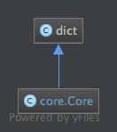

Core Module¶
The root class for the construction of Ontic implementation types.
Contents
Classes¶
Core¶
- class ontic.core.Core(*args, **kwargs)¶
The root type of Ontic types.
Core provides for Ontic object properties to be accessible as either dict key-value pairs or as object attributes. Core also supports dict style initialization.
- Dict Style Initialization
Core() -> new empty Core
Core(mapping) -> new Core initialized from a mapping object’s (key, value) pairs
Core(iterable) -> new Core initialized as if via:
d = Core() for k, v in iterable: d[k] = v
Core(**kwargs) -> new Core initialized with the name=value pairs in the keyword argument list. For example:
Core(one=1, two=2)
Example dict style and object style initialization:
>>> some_object = Core({'key1': 'value1'}) # Dict style initialization >>> other_object = Core(key1='value1') # Object style initialization
Example dict style and object style property access:
>>> # Object attribute access to value >>> assert some_object.key1 == 'value1' >>> assert other_object.key1 == 'value1' >>> # Dict key access to value >>> assert some_object['key1'] == 'value1' >>> assert other_object['key1'] == 'value1' >>> # Dynamic property assignment is supported >>> some_object.key2 = 'value2' # Object value initialization >>> assert some_object['key2'] == 'value2' >>> other_object['key3'] = 'value3' # Dict style key-value assignment >>> assert other_object.key3 == 'value3'
- __init__(*args, **kwargs)¶